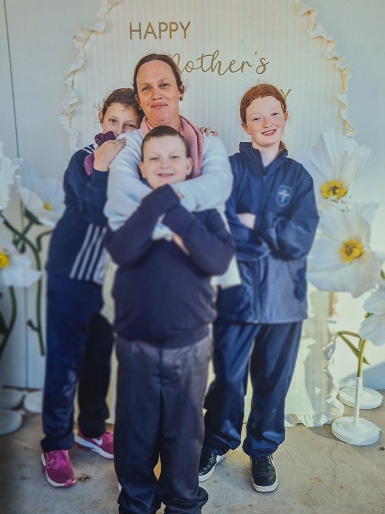

This week’s letter · Letter 06
Shalom: Peace in the Storm
“You will keep in perfect peace those whose minds are steadfast, because they trust in you.”
Isaiah 26:3
Read the letter →Sunday fades by Tuesday. The devotional sits unopened. Some weeks the faith feels thin, and the quiet time just doesn't happen — and you wonder if everyone else has it more together than you do.
The Stillwater Letters is a free weekly email of scripture, honest reflection, and real prayer — a growing circle of women across Australia doing the same ordinary, hard, holy everyday. Written by a woman in the middle of it with you.
Free, forever. Unsubscribe in one tap. A new letter every Tuesday morning.
Not ready to decide? Read this week's letter first →

Alice
Mum. Adelaide, SA.
Most of what I read for years came from women who'd already made it to the other side. Polished. Resolved. Wrapped up in a verse and a hashtag. And I am grateful for them. But I needed something else too.
I needed a voice from inside the same everyday I was in — the morning rush, the things I keep getting wrong, the prayers that feel small, the tiredness that doesn't lift. I needed someone to say I'm here too, and God is still good, and I don't have it all figured out either.
So I started writing the letters I wished someone would send me. Every Tuesday morning. Honest. Scriptural. Short enough to read with a coffee before the day begins, deep enough to actually pray.
The Stillwater Letters is for women who want to grow closer to God in the middle of ordinary life — not later, not when the kids are older, not when the diary calms down. Now. With a community of other women doing the same.
You are welcome here. There is no programme to finish, no ladder to climb. Just a weekly reminder that you are seen, that prayer still works, and that the still waters are real even when the week isn't quiet.
— Alice
P.S. — If something on your heart needs prayer, write to me directly. alice@thestillwaterletters.com.au. Real inbox, real reply.
The Stillwater Letters is the opposite of a content firehose. One short letter a week — written, not generated. Read it with your coffee. Sit with it. Pray it.
This week the Holy Spirit has led me to a place of peace — and it is not because all of a sudden my battles have ceased and all my prayers have been answered. He is my peace.
“Write down God’s faithfulness — record in your journal every evening one way that God has helped or provided for you that day.”
Submit what you're carrying — anonymously if you need to. It will be held before God this week — by name, in confidence. Not a feed. Not a forum. Just women quietly carrying each other to God.
Share what you're carrying — anonymously if you need to. It will be prayed over by name this week, gently and in confidence.
Some women serve as quiet intercessors — carrying one request at a time, praying it through. No pressure, no performance.
A monthly prayer gathering is taking shape — unhurried, no teaching, no programme. Women in the circle will be the first to know when it begins.
Week of 21 July 2026
“You will keep in perfect peace those whose minds are steadfast, because they trust in you.”
Isaiah 26:3
Read the letter →The circle is young, and gathering slowly. As women share what the letters have met in them, their words will appear here — always with their blessing, never without it.
Every request brought to the circle is carried by name — quietly, faithfully, week after week.
One quiet email, every Tuesday morning. Honest words, real prayer, a circle that truly prays. No programme to finish. Just a letter from a woman who means it.
Free always. No spam, no funnel, no nonsense.